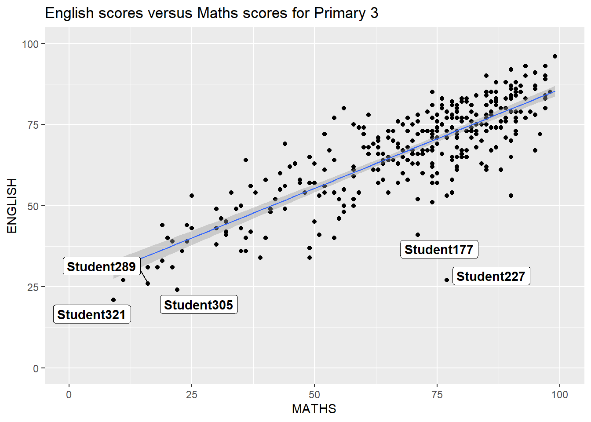
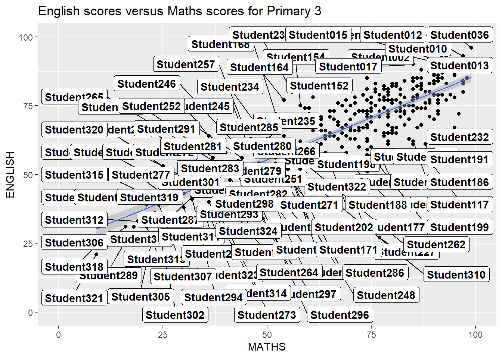
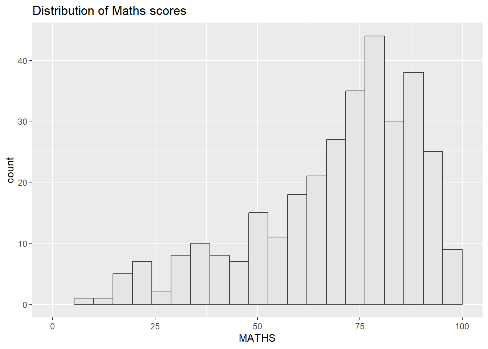

pacman::p_load(ggrepel, patchwork,
ggthemes, hrbrthemes,
tidyverse) Hands-on Exercise 2
1. Overview
In this exercise, I will be learning on how to:
- Control the placement of annotation on a graph using functions provided in ggrepel package
- Create professional publication quality figures using functions provided in ggthemes and hrbrthemes packages
- Plot composite figures by combining ggplot2 graphs using patchwork package
2. Getting Started
2.1. Install and Load required libraries
Code chunk below is used to check if all 4 R packages (ggrepel, ggthemes, hrbrthemes & patchwork) are installed and loaded onto the environment.
2.2. Import data
exam_data <- read_csv("data/Exam_data.csv")Rows: 322 Columns: 7
── Column specification ────────────────────────────────────────────────────────
Delimiter: ","
chr (4): ID, CLASS, GENDER, RACE
dbl (3): ENGLISH, MATHS, SCIENCE
ℹ Use `spec()` to retrieve the full column specification for this data.
ℹ Specify the column types or set `show_col_types = FALSE` to quiet this message.3. ggrepel
To prevent overlap of text, replace geom_text() with geom_text_repel() and geom_label() with geom_label_repel().
| ggrepel | Original Text | Replace with |
|---|---|---|
| geom_text() | geom_text_repel() | |
| geom_label() | geom_label_repel() |
ggplot(data=exam_data,
aes(x= MATHS,
y=ENGLISH)) +
geom_point() +
geom_smooth(method=lm,
size=0.5) +
geom_label(aes(label = ID),
hjust = .5,
vjust = -.5) +
coord_cartesian(xlim=c(0,100),
ylim=c(0,100)) +
ggtitle("English scores versus Maths scores for Primary 3")Warning: Using `size` aesthetic for lines was deprecated in ggplot2 3.4.0.
ℹ Please use `linewidth` instead.`geom_smooth()` using formula = 'y ~ x'
ggplot(data=exam_data,
aes(x= MATHS,
y=ENGLISH)) +
geom_point() +
geom_smooth(method=lm,
size=0.5) +
geom_label_repel(aes(label = ID),
fontface = "bold") +
coord_cartesian(xlim=c(0,100),
ylim=c(0,100)) +
ggtitle("English scores versus Maths scores for Primary 3")`geom_smooth()` using formula = 'y ~ x'Warning: ggrepel: 317 unlabeled data points (too many overlaps). Consider
increasing max.overlaps
ggplot(data = exam_data,
aes(x = MATHS,
y = ENGLISH)) +
geom_point() +
geom_smooth(method = lm,
linewidth = 0.5) +
geom_label_repel(aes(label = ID),
fontface = "bold",
max.overlaps = nrow(exam_data)*0.2) +
coord_cartesian(xlim = c(0,100),
ylim = c(0,100)) +
ggtitle("English scores versus Maths scores for Primary 3")`geom_smooth()` using formula = 'y ~ x'Warning: ggrepel: 228 unlabeled data points (too many overlaps). Consider
increasing max.overlaps
4. ggthemes
ggthemes provide ggplot2 themes by replicating the look of plots by Edward Tufte and Stephen Few.
| Category | Description |
|---|---|
| ggplot2 Built-in Themes | 8 built-in themes: theme_gray(), theme_bw(), theme_classic(), theme_dark(), theme_light(), theme_linedraw(), theme_minimal(), and theme_void() |
ggthemes (Extension) More examples found in ggthemes. |
Additional themes from the ggthemes package: theme_wsj(), theme_tufte(), theme_stata(), theme_solid(), theme_fivethirtyeight(), theme_few(), theme_excel(), theme_economist(), and theme_seq_gradient_pal() |
ggplot(data=exam_data,
aes(x = MATHS)) +
geom_histogram(bins=20,
boundary = 100,
color="grey25",
fill="grey90") +
theme_gray() +
ggtitle("Distribution of Maths scores") ggplot(data=exam_data,
aes(x = MATHS)) +
geom_histogram(bins=20,
boundary = 100,
color="grey25",
fill="grey90") +
ggtitle("Distribution of Maths scores") +
theme_economist()
5. hrbrthemes
This package provides a base theme that focuses on typographic elements including labels (axis label) and fonts (font size). In addition, the second goal centers around productivity for a production workflow.
6. patchwork
It is used to combine separate ggplot2 graphs into a single figure. It also provides auto-tagging capabilities. This package has a general syntax that combines:
Two-column Layout using the plus sign (+)
Parenthesis () to create a subplot group
Two-row Layout using the division sign (/)
p1 <- ggplot(data=exam_data,
aes(x = MATHS)) +
geom_histogram(bins=20,
boundary = 100,
color="grey25",
fill="grey90") +
coord_cartesian(xlim=c(0,100)) +
ggtitle("Distribution of Maths scores")
p1#
p2 <- ggplot(data=exam_data,
aes(x = ENGLISH)) +
geom_histogram(bins=20,
boundary = 100,
color="grey25",
fill="grey90") +
coord_cartesian(xlim=c(0,100)) +
ggtitle("Distribution of English scores")
p2#
p3 <- ggplot(data=exam_data,
aes(x= MATHS,
y=ENGLISH)) +
geom_point() +
geom_smooth(method=lm,
size=0.5) +
coord_cartesian(xlim=c(0,100),
ylim=c(0,100)) +
ggtitle("English scores versus Maths scores for Primary 3")
p3#`geom_smooth()` using formula = 'y ~ x'
p1 + p2(p1 / p2) | p3`geom_smooth()` using formula = 'y ~ x'((p1 / p2) | p3) +
plot_annotation(tag_levels = 'I')`geom_smooth()` using formula = 'y ~ x'p3 + inset_element(p2,
left = 0.02,
bottom = 0.7,
right = 0.5,
top = 1)`geom_smooth()` using formula = 'y ~ x'
patchwork <- (p1 / p2) | p3
patchwork & theme_economist()`geom_smooth()` using formula = 'y ~ x'